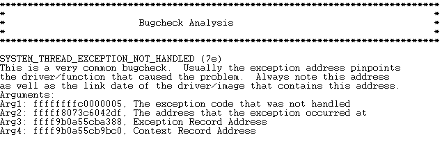
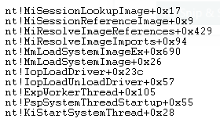
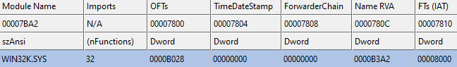

This all began when I was playing around with the PE file format and ended up tinkering with the loading process of drivers. Upon loading a particularly simple driver the OS crashed with the following error:



Peering through the callstack functions I found that MiResolveImageReferences appeared to be the one with the logic I was interested in. To summerize the function:
While testing other drivers, I found that the Session member always appears to be null as the loading context takes place in the System process. However, while other drivers do trigger MiResolveImageReferences, they never reach MiSessionReferenceImage. That is until I looked at drivers loaded at boot time. The inital loaded of the Win32k* drivers do reach MiSessionReferenceImage, however they have a valid Session member in thier EPROCESS. This appears to be due to the fact that they are loaded by csrss.exe and not the system process.
In the end, I could've learned all this from a StackOverflow anwser anwser which explains the results I was seeing. In addition, the csrss process loads the Win32k* drivers in the current session. The system process is not part of that session. The API called is not NtLoadDriver, but rather NtSetSystemInformation using a special infromation class seen here. With this information, it appears that drivers, at least those loaded via NtLoadDriver, were never designed to import (in PE loader terms) functions from Win32k. Perhaps in past Windows versions it was possible. Another mystery solved?